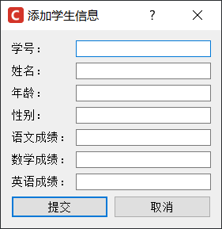

首页 > 编程笔记
Qt实现学生信息管理系统
本节我们教大家用 Qt 实现一个带界面的学生信息管理系统，完成后的系统主界面如下图所示：
图 1 学生信息管理系统主界面
该学生信息管理系统将学生信息保存到文件中，用户借助界面上的表格、列表、按钮、输入框等控件，可以对学生信息进行查看、添加、删除、查找、更改、保存等操作。
主界面的设计实现思路是：将 QHBoxLayout 作为主界面的布局工具，内部添加两个 QGroupBox 分组框，从而将整个界面一分为二：
由此，主窗口就设计完成了。
设计图 2 所示的添加学生信息界面非常简单，只需要自定义一个继承自 QDialog 的窗口类，用 QVBoxLayout 作为该窗口的布局工具，并依次将 QFormLayout 和 QHBoxLayout 添加到 QVBoxLayout 中：
由此，添加学生信息的窗口就设计完成了。
图 4 项目结构
各个文件的作用分别是：
整个项目的实现过程，需要重点说明的有以下几点：
例如在本项目中，MainWidget.cpp 文件 flushTable() 函数的功能是更新 QTableWidget 表格控件中显示的学生信息。更新学生信息之前，需要调用 disconnect() 函数切断 cellChanged() 信号函数与其它所有槽函数的关联，然后才能正常更新数据，更新完成后再恢复 cellChanged() 与其它槽函数的关联。
之所以更新数据前必须切断 cellChanged() 与其它槽函数的关联，是因为更新表格数据会不断地触发 cellChanged() 信号，最终会导致程序崩溃。
最终，student_temp.txt 文件中存储的就是最新的学生信息，我们可以将 student.txt 文件中的内容删除，然后将 student_temp.txt 文件中的内容拷贝到 student.txt 文件中，最后删除 student_temp.txt 文件；也可以直接删除 student.txt 文件，然后将 student_temp.txt 文件的名称改为 student.txt，本项目中采用的是第二种方法。
图 5 项目的所有文件
首先，我们要在项目中新建一个后缀名为 qrc 的文件，鼠标移动到项目名上右击选择“添加新文件”，Qt Creator 会弹出如下对话框：
图 6 创建 qrc 文件
选择 "Qt -> Qt Rescource File"，可以创建一个 qrc 文件。在此基础上，在 image.qrc 上右击选择“添加现有文件”，选中项目中的 logo.ico 图标，就被成功地将图标添加到项目中。
接下来，哪个界面需要添加图标，直接调用 setWindowIcon() 方法即可，例如：
源码中有非常详尽的注释，再结合本文对整个项目的介绍，很容易可以搞清楚每段代码的含义和作用，这里不再一一解释。
图 1 学生信息管理系统主界面
该学生信息管理系统将学生信息保存到文件中，用户借助界面上的表格、列表、按钮、输入框等控件，可以对学生信息进行查看、添加、删除、查找、更改、保存等操作。
学生信息管理系统的界面设计
整个学生信息管理系统，需要设计两个界面，一个是图 1 所示的主界面，另一个是添加学生信息的界面，如下图所示：

图 2 添加学生信息界面
图 2 添加学生信息界面
主界面的设计实现思路是：将 QHBoxLayout 作为主界面的布局工具，内部添加两个 QGroupBox 分组框，从而将整个界面一分为二：
- 左边的分组框中添加一个 QTableWidget 表格控件，如果想让表格控件的尺寸随着主窗口尺寸的变化而变化，可以将 QTableWidget 框架添加到某个布局工具中（比如 QHBoxLayout、QVBoxLayout 等）。
- 右边的分组框中，向 QVBoxLayout 先后添加一个 QListWidget 和 QGridLayout，从而将右侧分组框分为上下两部分。在 QGridLayout 中放置添加、删除、保存、退出按钮以及一个 QLineEdit 单行输入框。
由此，主窗口就设计完成了。
设计图 2 所示的添加学生信息界面非常简单，只需要自定义一个继承自 QDialog 的窗口类，用 QVBoxLayout 作为该窗口的布局工具，并依次将 QFormLayout 和 QHBoxLayout 添加到 QVBoxLayout 中：
- 向 QFormLayout 中添加多个单行输入框；
- 向 QHBoxLayout 中添加两个按钮。
由此，添加学生信息的窗口就设计完成了。
学生信息管理系统的功能实现
整个学生信息管理系统，由以下几个文件构成：图 4 项目结构
- StuInfoFile.pro：项目文件，整个项目的实现并没有手动修改此文件中的内容；
- main.cpp：整个项目的主程序文件，用来启动主界面；
- MainWidget.h 和 MainWidget.cpp：自定义的窗口类（继承自 QWdiget），实现图 1 所示的主界面，并完成主界面中所有控件的功能；
- EditStuMessBox.h 和 EditStuMessBox.cpp：自定义的窗口类（继承自 QDialog），实现图 2 所示的界面，并完成添加学生信息界面的功能；
- Tool.h 和 Tool.cpp：包含一些公共的宏定义和函数；
- image.qrc：为项目中的窗口添加 icon 图标。
整个项目的实现过程，需要重点说明的有以下几点：
1、合理使用信号和槽
对于关联在一起的信号函数和槽函数，有些场景中，需要调用 disconnect() 暂时取消它们之间的连接，后续再重新关联它们。例如在本项目中，MainWidget.cpp 文件 flushTable() 函数的功能是更新 QTableWidget 表格控件中显示的学生信息。更新学生信息之前，需要调用 disconnect() 函数切断 cellChanged() 信号函数与其它所有槽函数的关联，然后才能正常更新数据，更新完成后再恢复 cellChanged() 与其它槽函数的关联。
之所以更新数据前必须切断 cellChanged() 与其它槽函数的关联，是因为更新表格数据会不断地触发 cellChanged() 信号，最终会导致程序崩溃。
2、从文件中删除和更改某个学生信息
实现对学生信息的“增删查改”操作中，删除和修改学生信息的实现过程更复杂一些，本项目中采取的实现方法是：不断地从 student.txt 文件中读取学生信息，判断读取到的学生信息是否需要删除或修改，如果不需要，则直接写入 student_temp.txt 文件；反之如果需要删除，则直接将读取到的信息丢弃，如果需要修改，则将修改后的学生信息写入到 student_temp.txt 文件中。最终，student_temp.txt 文件中存储的就是最新的学生信息，我们可以将 student.txt 文件中的内容删除，然后将 student_temp.txt 文件中的内容拷贝到 student.txt 文件中，最后删除 student_temp.txt 文件；也可以直接删除 student.txt 文件，然后将 student_temp.txt 文件的名称改为 student.txt，本项目中采用的是第二种方法。
3、为项目添加图标
图 4 中，image.qrc 文件是用来为项目添加图标的，本项目选用的是 C 语言中文网的 icon 图标，就存储在当前项目的文件夹内，如下图所示：图 5 项目的所有文件
首先，我们要在项目中新建一个后缀名为 qrc 的文件，鼠标移动到项目名上右击选择“添加新文件”，Qt Creator 会弹出如下对话框：
图 6 创建 qrc 文件
选择 "Qt -> Qt Rescource File"，可以创建一个 qrc 文件。在此基础上，在 image.qrc 上右击选择“添加现有文件”，选中项目中的 logo.ico 图标，就被成功地将图标添加到项目中。
接下来，哪个界面需要添加图标，直接调用 setWindowIcon() 方法即可，例如：
setWindowIcon(QIcon(":/logo.ico"));
icon 图标的存储路径可以通过右击项目中的 logo.ico 图标，选择 "Copy Path ":logo.ico" 即可获得。
学生信息管理系统实现源码
点击学生信息管理系统，即可下载整个项目的实现源码。下载完成后，依次完成以下操作即可运行项目：- 打开 Qt Creator 并创建一个不带 ui 文件的新 Qt Widget Application 项目，删除项目中默认生成的所有源文件；
- 找到存储新项目的文件夹，将下载的文件全部拷贝到文件夹内；
- 在 Qt Creator 中逐一将这些源码文件添加到项目里（项目名上右键选择“添加现有文件”）；
- 手动添加 icon 图标。
源码中有非常详尽的注释，再结合本文对整个项目的介绍，很容易可以搞清楚每段代码的含义和作用，这里不再一一解释。
关注公众号「站长严长生」，在手机上阅读所有教程，随时随地都能学习。内含一款搜索神器，免费下载全网书籍和视频。

微信扫码关注公众号